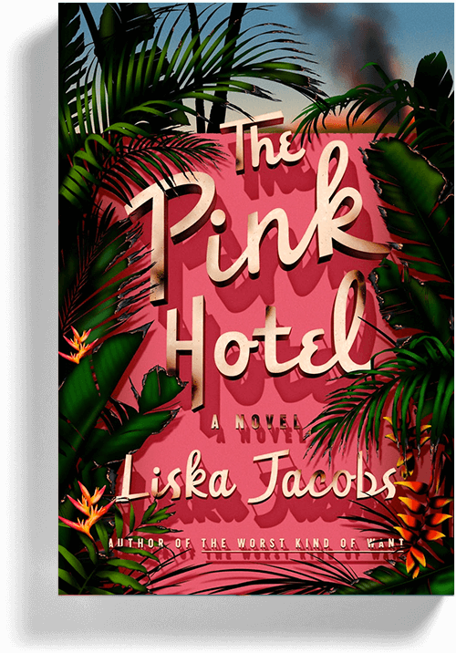
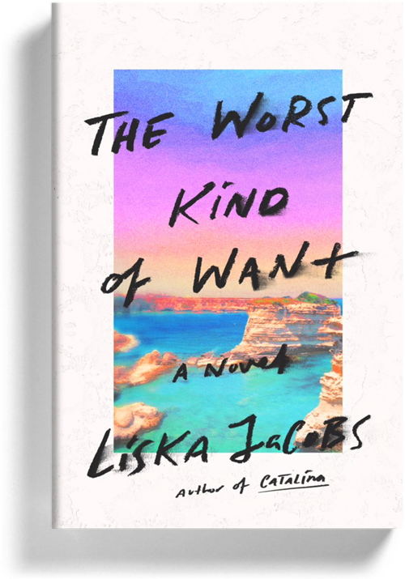

Heady and dark and dangerous, The Pink Hotel is an intoxicating binge of a book.
Confined to an opulent Beverly Hills hotel during a raging wildfire, a young couple is caught in the escalating tension between the wealthy guests and the staff, in Liska Jacobs's blistering, dark social satire, The Pink Hotel.
Out July 19
Pre order

This crispy biscotti of a novel is about a producer who goes to Italy, has a scandalous relationship, and decodes not just the meaning of life but also the meaning of death, sex, dance clubs, and emoji. You’ll feel indecent reading it in public.
Dark, seductive . . . Noirish and sexy, this provocative novel explores what it’s like to be a woman on the edge, and what happens when dreams are deferred for too long.
Jacobs is establishing herself as a novelist who can probe what it means to be both selfish and vulnerable, asking with bald-faced earnestness: What, in 2019, are adult women allowed to want—and at what cost?
Buy

Jacobs' riveting debut novel [is] part California story, part feminist social commentary . . . In Catalina, Jacobs tracks, with a sense of inevitability, the fallout of a woman with the audacity to make her own mistakes.
If noir lit with a feminist twist appeals, treat yourself to Liska Jacobs's magnetic debut novel, Catalina.
Buy

About the Author
Liska Jacobs holds an MFA from the University of California, Riverside. Her essays and short fiction have appeared in The Rumpus, Los Angeles Review of Books, Literary Hub, The Millions, and The Hairpin, among other publications.
Contact
Represented by Marya Spence at Janklow and Nesbit
For events or press queries contact:
Chloe Texier-Rose, FSG Books